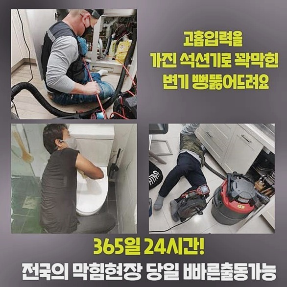
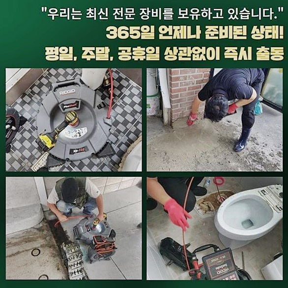
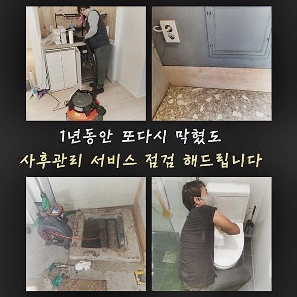
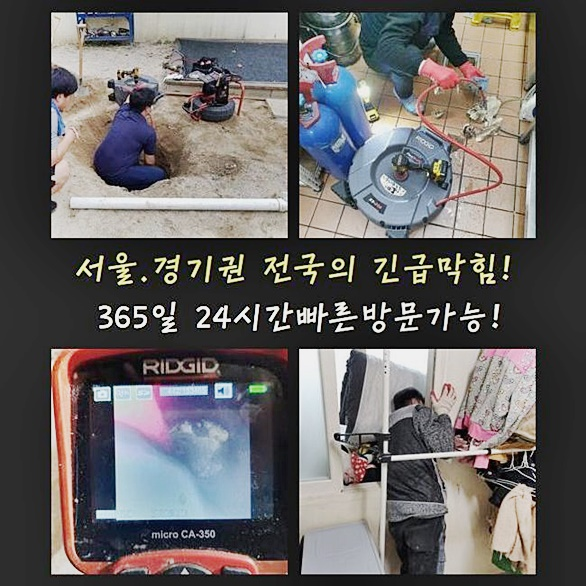
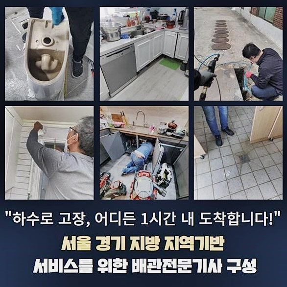

🏠 중구 남산동세탁기배수구막힘 청구동 배수구뚫기 설비업체
용인 하수구막힘 전문 시공 후기

📋 작업 개요
- 위치: 용인
- 서비스 유형: 하수구막힘, 배관막힘, 역류해결, 뚫는업체, 배관청소, 고압세척
- 작업 일시: 2024. 8. 14. 9:57
- 업체명: 하수구수사대 (010-5615-2118)
🔍 문제 상황
중구 남산동세탁기배수구막힘 청구동 배수구뚫기 설비업체
생활하면서 하수관로를 오래 쓰면 쓸수록 각양각색의 원인들로 말미암아 막혀버리는 사고가 불가피하게 벌어지곤 해요
상가건물이나 주거시설 등 여러 곳에서 예외 없이 불현듯 닥치는 하수구의 막힘은 드물다고 보기는 힘들어요
준설 문제로 전문 업체가 필요하다면 필수적 장비라인업이 마련되어 원인을 철저히 규명한 뒤 이를 철저히 수습해주는 곳을 선정해야만 후회가 없습니다
최근 막힘건으로 다녀온 곳은 비밀번호가 걸려있지 않은 상업시설 내 화장실이었고 물이 어느순간 막혔다며 위급하다고 알려주셨습니다
고정되지 않은 많은 인원이 이용해야만 하는 시설이니 거주목적의 건물 보다는 막혀서 생기는 문제들이 흔하게 도래할 수 있습니다
접수를 넣어주신 분께서는 단순하게 막힌 적은 많았어도 역류까지 올라오는 점은 처음 마주하게 된 것이라며 어찌할 바를 몰라 힘들었다 하셨어요
하루 내도록 건물 이용객들이 반드시 활용해야만 하는 장소이기에 더욱 빠른 개선이 필요하다고 인지되어서 문제되던 지점을 고치게 되었어요
단순한 막힘으로 추정되는 상담을 통해서 찾아가 보면 막히는 근원부들은 의외로 다채로운 종류가 있어서 여러 테스트를 기반으로 원인을 제대로 규명해 주는 곳을 찾는 게 최선입니다!
현장으로 찾아간 다음에 관련 도구들을 셋팅해두고 어떤 사유로 인한 것이며 얼마나 진행되었는지를 검토에 들어갔습니다
통계적으로 보자면 내부에서 기기를 넣는 것으로도 전과정을 수행할 수 있는 장소가 외측의 하수구 환경까지 신중히 검토한 후 착수해야지 처리되는 경우도 있습니다

🔎 원인 분석
💡 전문가 진단: 정밀 진단 장비를 사용하여 슬러지의 고착 여부를 판명하고 타격/세척 작업을 실시했습니다.
본 현장도 상황이 중증 이상이라 실내뿐만 아니라 옥외 준설까지도 장애요인이 자리했기에 처리 과정의 난이도가 녹록지 않아 보였습니다
어마어마한 악취가 사방에 널리 퍼진 상태에 추가로 역류까지 존재했기 때문에 원인 파악에 초점을 맞추어 스타트를 끊어야 했어요
코를 틀어막을 수준의 악취가 형성되는 지점부터 작업을 실시했는데 혼탁한 물이 고여있었고 여러 형상의 물질들이 축적되어 물이 빠지기 불가할 정도라 싶었네요
설치된 파이프 구조에서 메인 배관의 굵은 가지로 수렴하는 구조일 경우에는 한 파트만 막힌다 해도 전반적인 시설물의 고장이 충분히 생길 수 있습니다
진입하는 출입구 하나만 점검해 봐도 여건이 위급하다는 사실을 알아차릴 수 있었어요
바닥에서 흘러들어간 흙도 어마어마한 양이 발견됐고 통로를 가득 메우고 있어서 관찰을 위한 내시경을 넣는 단계도 곤혹스러웠습니다
약간의 물길을 내기 위해서 상단의 찌꺼기를 걷어올리고 장치가 진입할 수 있는 숨구멍을 내놓고 들여보내서 디테일하게 탐색을 해주었습니다
설비 문제로 인해서 난항을 겪어오시던 고객님은 급한 마음에 뚫어뻥같은 도구로 작업을 적극적으로 선뜻 나서시기도 해요
전문적인 도구가 결여된 채로 어설프게 청소하는 것으로는 퀄리티 높은 배관청소는 어려울 것으로 예상됩니다!
내부에 고인 이물들은 시간이 갈수록 고형화되어 배관과 밀착되어 한몸이 되니 뜯어내면서 아무래도 큰 타격감을 가중시킬 수 있어요
무리하게 힘쓰다가는 이물질 속성을 바꿔 악화시켜버릴 위험도 있는 사안이므로 잘 알아보고 모든 케이스를 커버가능한 전문공을 불러서 막막한 상황을 타개해야 합니다
마치 청소기처럼 쓰는 석션기는 흡수능력이 타의 추종을 불허하기에 빈틈 없이 채워져 있는 오염 물질들을 남김 없이 빼낼 수 있게 됩니다

🔧 작업 과정
오물들을 일차적으로 필터링하는 마개를 뽑아내고 석션을 간단히 실행했는데도 석션기 통을 열어보니 무수한 양의 오염원들이 외부로 쏟아져 나왔더라고요
그리고는 야외랑 이어진 통로 역시 꼼꼼하게 현황을 판별해 보니까 흘러가던 한가운데 부위가 이미 침범되어 버린 것을 목도하게 됐네요
배수로의 사이즈 자체가 널찍하지도 못했거니와 장기간 누적된 잔량들이 견고하게 붙어서 물길을 옥죄고 있는 상태였습니다
청소되지 못한 이물질들이 차곡차곡 적립이 되면서 물흐름의 발목을 잡게 되고 역방향으로 터져나가는 사건까지 초래되고 만 것입니다
아까보단 넓은 통로로 어렵사리 석션 노즐을 넣어서 작동을 시켜 보았는데 방금 전과 유사하게 여러 형상의 불순물이 덩어리처럼 붙은 모양 그대로 쏙쏙 올라오는 게 보였죠
많은 하수구를 다루다 보면 파이프의 가장자리에 오염물이 끈끈하게 붙어버린 경우도 자주 눈에 띈답니다
오래된 찌꺼기일수록 세정 클리너나 락스 등을 쓰는 청소 방식만 가해서는 좋은 결과를 얻기 어렵죠
살짝 물이 빠지는 듯 느껴지다가도 이내 끝없이 부메랑처럼 돌아오니 뚫기 위해 쓰는 에너지만 더 낭비되는 꼴이 됩니다
보통은 외부 정화시설까지도 막힌 곳이 대다수라서 한 군데도 소홀하지 않게 청소에 들어가야 합니다
배관이 낡은 수준과 순차적인 동선을 정해서 방해요소를 모두 척결하는 세척 단계를 리드하게 됐어요
많은 곳이 오염됐다면 풍기는 냄새도 상당하게 악화되어갈 것이므로 물만 안내려갈 뿐이라 여기지말고 지체하는 시간 없도록 내부 정비를 요청해야 합니다
이번 현장은 내면까지도 불순물이 강하게 부착되어 흔들림 없이 유지됐기에 보다 강한 고압세척 단계로 문제 부위를 처리하기로 했어요
힘이 좋은 물살을 목표한 곳에 정확히 발사해서 일반 스케일링 장비로는 완전 소거되지 않은 장애 요인들을 한 방에 닦아내 주는 것을 물살이 마무리해주는 겁니다
야외에 있는 집수관이나 다량의 물이 빠지는 메인 관로는 막힘이 쉽게 극복되기 힘든데 이럴 때 이런 고압 이용이 가능한 장비를 사용하면 효율이 높아요
고착화된 부분에서는 수압을 높여 문제 부위가 처리할 수 있게끔 오감에 집중하여 작업한 결과 오물이 떨어지는걸 결국 얻어낼 수 있었어요
고압수를 쏘는 절차로 작업한 결과 배수관이 매끈매끈해져서 한시름 덜 수 있었어요
문제가 심한 곳에서도 여타 툴들을 오래 사용하는 것보다 하수관에 집적된 묵은 때들을 얼마든지 다루어낼 수 있으므로 가정집이라도 챙겨오고 있어요
외부에서의 활동들을 완수하고 난다면 안으로 들어가서 통수가 원활한지 재차 확인해 보게 됩니다
하자로 자리했던 문제들을 고치니 들어서자마자 스믈스믈 올라오던 냄새도 싹 소강되어 고객님께서도 만족스러운 표정을 지어주셨어요


✅ 작업 완료
이와 같은 하수 시스템의 곤란은 일반 가정이과 상업시설 모두 자주 직면하게 되는 일인데 스스로 고치기보다는 전문가를 부르는게 좋아요
현장마다 유연하게 변화하는 자세를 갖추고 시공을 완수한 다음에도 관리를 지속해주는 업체로 정하시는 것이 중요합니다
같은 증상으로 상황이라도 실제 건물의 절대적인 이용 총량도 다르고 배수관 구성도 차이점을 보이기 때문에 다수의 요소를 따져본 후 작업 요강을 정하게 됩니다
문제의 근원부를 제대로 추적하고 누락분 없이 수습해주는 전문 수리공을 부르셔야만 최상의 만족을 느끼실 수 있습니다
밤낮 가리지 않고 전화주셔도 내 집이라고 여기고 서비스를 해드리겠습니다!



⚠️ 하수구 배관 막힘 예방 및 관리 가이드
- ✅ 머리카락, 비닐, 물티슈 등 물에 분해되지 않는 이물질은 하수구 유입을 절대 금지해 주세요.
- ✅ 하수구 거름망을 씌우고 모여진 이물질은 주기적으로 쓰레기통에 바로 비워주셔야 합니다.
- ✅ 배관 노후가 심할 경우 이물질이 더 쉽게 걸리므로 주기적인 배관 세척(고압세척 등)을 권장합니다.
- ✅ 작업 후 1년 이내 재발 시 하수구수사대에서 무상 A/S 보증 서비스를 제공합니다.
💡 핵심 정리
- 확실한 장비 작업(내시경 점검 및 샤프트 스케일링)으로 원인을 뿌리 뽑습니다.
- 작업 후 1년 이내에 동일한 부위 재발 시 100% 무상 A/S 서비스를 보장합니다.
- 서울 · 경기 · 인천 전 지역에 24시간 언제든 긴급 출동할 수 있도록 항시 대기 중입니다.
❓ 자주 묻는 질문 (FAQ)
🚨 용인 하수구막힘 문제로 고민이신가요?
정확한 원인 진단과 확실한 시공으로 재발 없는 해결을 약속드립니다.
24시간 긴급 출동 | 서울 · 경기 · 인천 전지역 | 1년 내 재발 시 무상 A/S